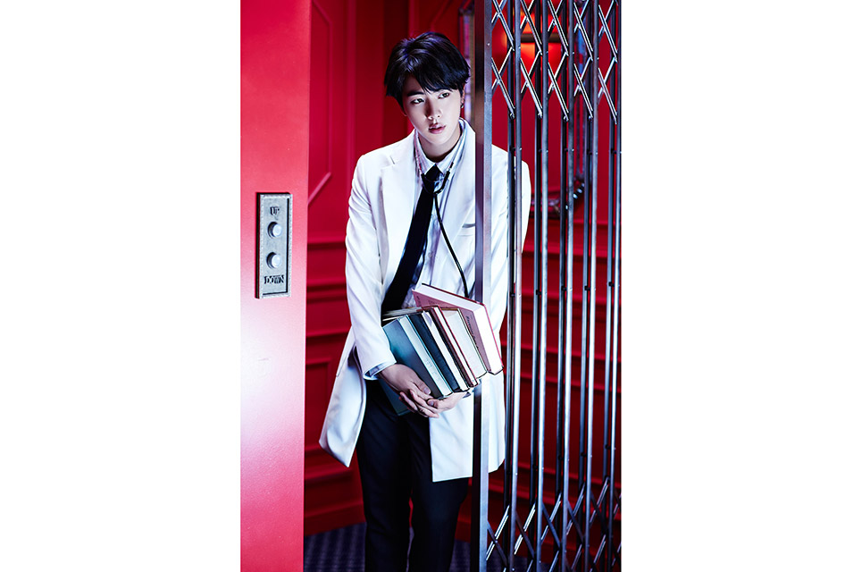

The Most Beautiful Moment in Life, Part 1
(hangul: 화양연화 Pt.1, romanización revisada: Hwayang-yeonhwa Pt.1)?
es el tercer EP de la boy band surcoreana BTS.
El EP fue publicado el 29 de abril de 20151 y es primer álbum del proyecto de dos
partes del grupo que se centra en la "Youth" (lit. Juventud).2
Se lanzaron dos versiones del álbum los cuales contienen nueve
canciones con el sencillo principal «I Need U»
y en junio, la banda promovió «Dope», otra canción del álbum.
En Corea del Sur, The Most Beautiful Moment in Life, Part 1
se colocó en el puesto número 6 de los álbumes más vendidos de 2015 en la Gaon Chart.

Intro
I Need U
Hold Me Tight
Skit
Dope
흥탄소년단
Converse Hight
Move
Outro: Love is Not Over